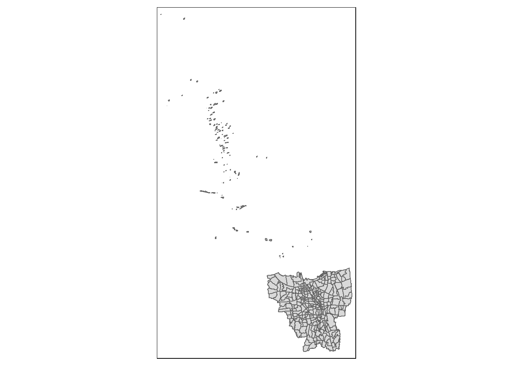
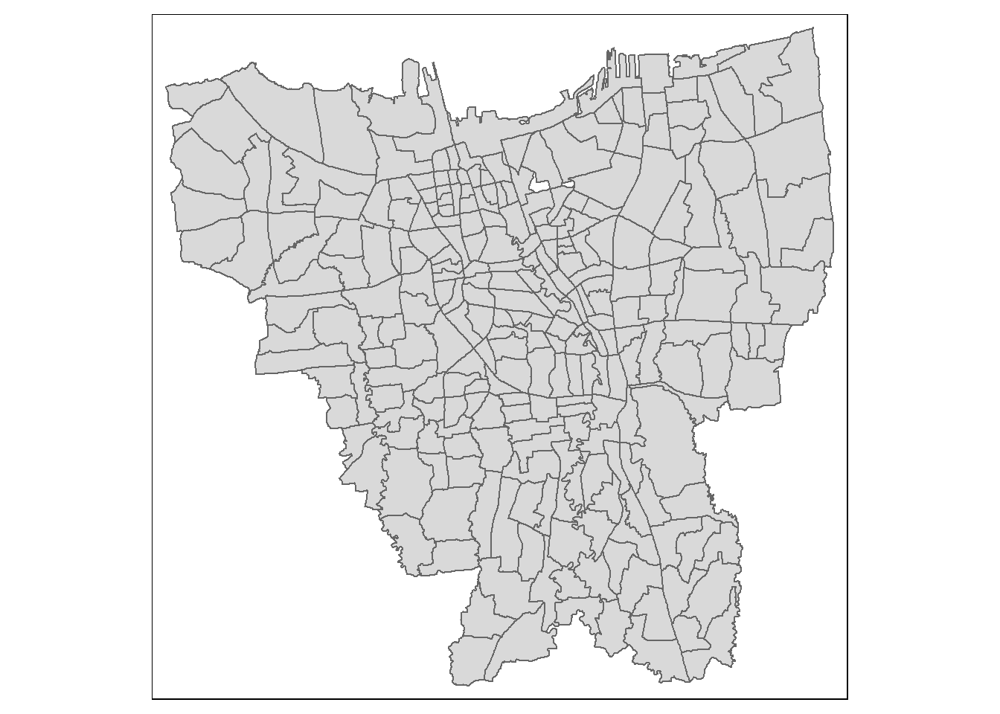
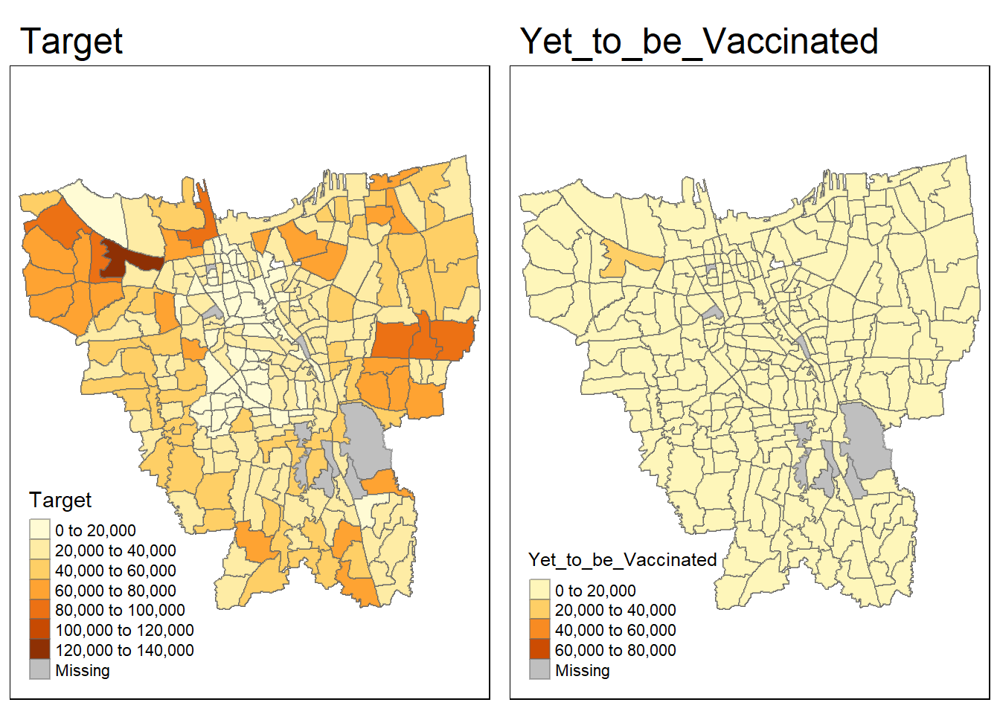
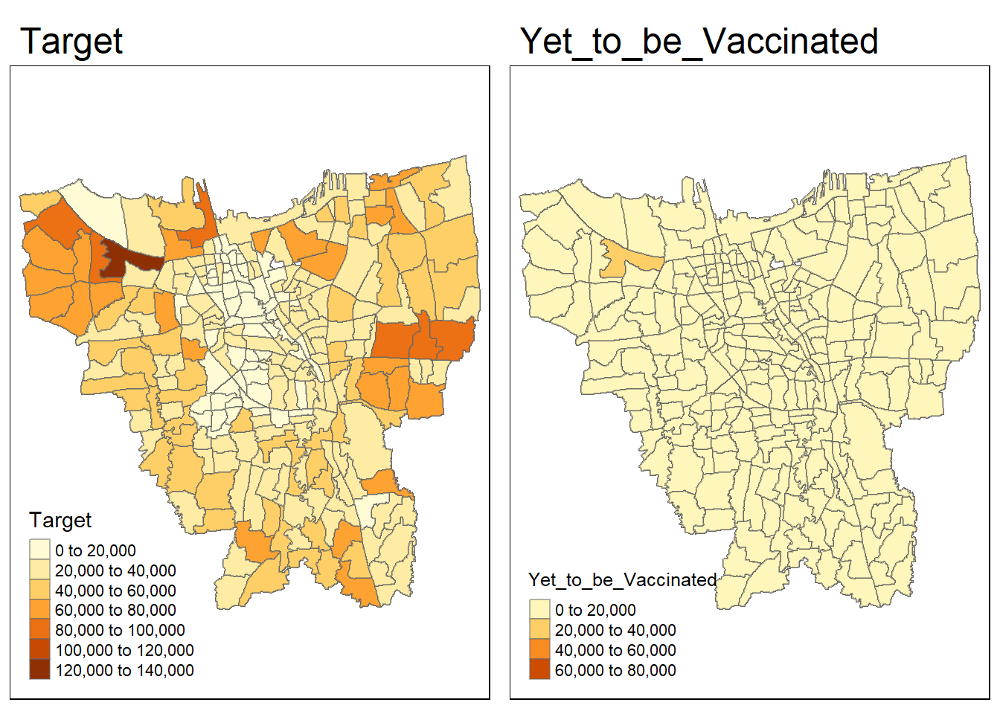
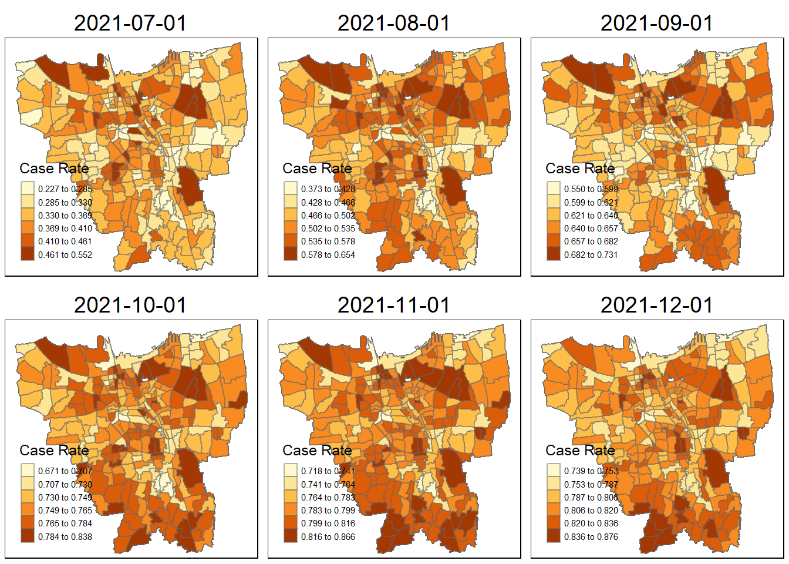
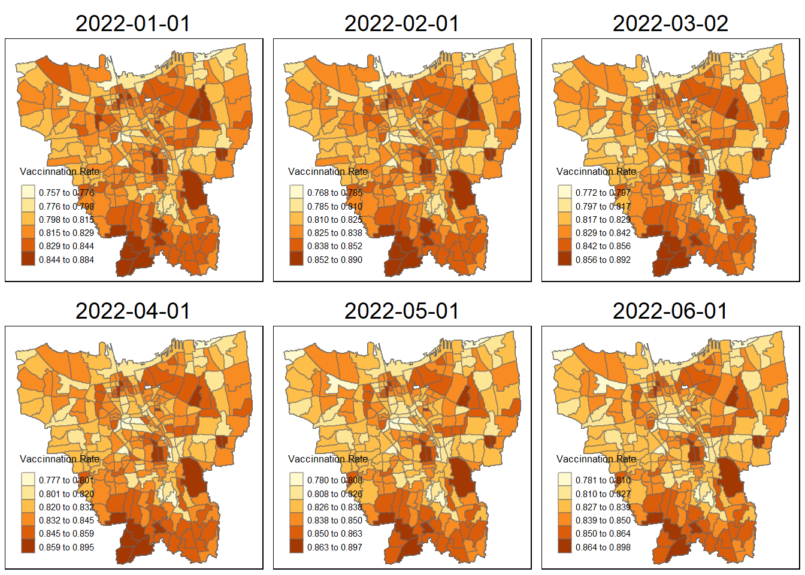
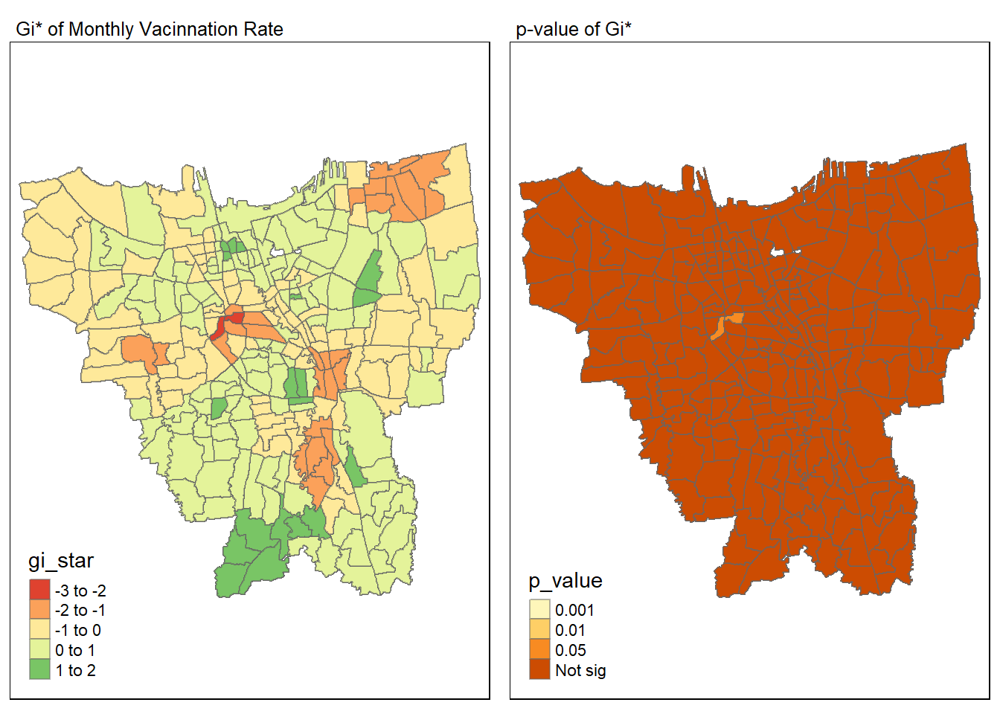

pacman::p_load(sf, spdep, tmap, tidyverse, knitr,readxl,dplyr,lubridate,stringr,sfdep,plotly)Takehome_Ex02
Take-home Exercise 2: Spatio-temporal Analysis of COVID-19 Vaccination Trends at the Sub-district Level, DKI Jakarta
Background
Since late December 2019, an outbreak of a novel coronavirus disease (COVID-19; previously known as 2019-nCoV) was reported in Wuhan, China, which had subsequently affected 210 countries worldwide. In general, COVID-19 is an acute resolved disease but it can also be deadly, with a 2% case fatality rate.
The COVID-19 vaccination in Indonesia is an ongoing mass immunisation in response to the COVID-19 pandemic in Indonesia. On 13 January 2021, the program commenced when President Joko Widodo was vaccinated at the presidential palace. In terms of total doses given, Indonesia ranks third in Asia and fifth in the world.
According to wikipedia, as of 5 February 2023 at 18:00 WIB (UTC+7), 204,266,655 people had received the first dose of the vaccine and 175,131,893 people had been fully vaccinated; 69,597,474 of them had been inoculated with the booster or the third dose, while 1,585,164 had received the fourth dose. Jakarta has the highest percentage of population fully vaccinated with 103.46%, followed by Bali and Special Region of Yogyakarta with 85.45% and 83.02% respectively.
Despite its compactness, the cumulative vaccination rate are not evenly distributed within DKI Jakarta. The question is where are the sub-districts with relatively higher number of vaccination rate and how they changed over time.
Objective
Apply appropriate Local Indicators of Spatial Association (LISA) and Emerging Hot Spot Analysis (EHSA) to undercover the spatio-temporal trends of COVID-19 vaccination in DKI Jakarta.
Reveal the spatio-temporal patterns of COVID-19 cases in the DKI Jakarta province on a sub-district level
Examine sub-districts that have a higher value of confirmed cases and deaths relative to other sub-districts
Data Preparation
Package Used
Dataset Used
datasets <- data.frame(
Type=c("Geospatial",
"Aspatial"),
Name=c("[Batas Desa Provinsi DKI Jakarta] Link:(https://www.indonesia-geospasial.com/2020/04/download-shapefile-shp-batas-desa.html)",
"[Standar Kelurahan Data Corona (Monthly)] Link:(https://riwayat-file-covid-19-dki-jakarta-jakartagis.hub.arcgis.com/)"),
Format=c("Shapefile",
".xlsx"),
Description=c("Sub-districts in DKI Jakarta",
"Sub-district level data of daily COVID-19 cases in DKI Jakarta
between March 2020~July 2021")
)
library(knitr)
library(kableExtra)
Attaching package: 'kableExtra'The following object is masked from 'package:dplyr':
group_rowskable(head(datasets), caption="Datasets Used") %>%
kable_material("hover", latex_options="scale_down")| Type | Name | Format | Description |
|---|---|---|---|
| Geospatial | [Batas Desa Provinsi DKI Jakarta] Link:(https://www.indonesia-geospasial.com/2020/04/download-shapefile-shp-batas-desa.html) | Shapefile | Sub-districts in DKI Jakarta |
| Aspatial | [Standar Kelurahan Data Corona (Monthly)] Link:(https://riwayat-file-covid-19-dki-jakarta-jakartagis.hub.arcgis.com/) | .xlsx | Sub-district level data of daily COVID-19 cases in DKI Jakarta between March 2020~July 2021 |
Import Geospatial Data
Let’s import our geospatial data and only select necessary field, which is first 9 field
jakarta <- st_read(dsn="data/geospatial",
layer="BATAS_DESA_DESEMBER_2019_DUKCAPIL_DKI_JAKARTA") %>% select(0:9)Reading layer `BATAS_DESA_DESEMBER_2019_DUKCAPIL_DKI_JAKARTA' from data source
`C:\Quanfang777\IS415-GAA\Takehome_Exercise\Takehome_Exercise2\data\geospatial'
using driver `ESRI Shapefile'
Simple feature collection with 269 features and 161 fields
Geometry type: MULTIPOLYGON
Dimension: XY
Bounding box: xmin: 106.3831 ymin: -6.370815 xmax: 106.9728 ymax: -5.184322
Geodetic CRS: WGS 84From the data we learnt that the CRS is in WGS 84, but we should change it to national CRS of Indonesia, the ESPC code should be 23845
jakarta <- st_transform(jakarta, 23845) Let’s double check if CRS has been properly assigned
st_crs(jakarta)Coordinate Reference System:
User input: EPSG:23845
wkt:
PROJCRS["DGN95 / Indonesia TM-3 zone 54.1",
BASEGEOGCRS["DGN95",
DATUM["Datum Geodesi Nasional 1995",
ELLIPSOID["WGS 84",6378137,298.257223563,
LENGTHUNIT["metre",1]]],
PRIMEM["Greenwich",0,
ANGLEUNIT["degree",0.0174532925199433]],
ID["EPSG",4755]],
CONVERSION["Indonesia TM-3 zone 54.1",
METHOD["Transverse Mercator",
ID["EPSG",9807]],
PARAMETER["Latitude of natural origin",0,
ANGLEUNIT["degree",0.0174532925199433],
ID["EPSG",8801]],
PARAMETER["Longitude of natural origin",139.5,
ANGLEUNIT["degree",0.0174532925199433],
ID["EPSG",8802]],
PARAMETER["Scale factor at natural origin",0.9999,
SCALEUNIT["unity",1],
ID["EPSG",8805]],
PARAMETER["False easting",200000,
LENGTHUNIT["metre",1],
ID["EPSG",8806]],
PARAMETER["False northing",1500000,
LENGTHUNIT["metre",1],
ID["EPSG",8807]]],
CS[Cartesian,2],
AXIS["easting (X)",east,
ORDER[1],
LENGTHUNIT["metre",1]],
AXIS["northing (Y)",north,
ORDER[2],
LENGTHUNIT["metre",1]],
USAGE[
SCOPE["Cadastre."],
AREA["Indonesia - onshore east of 138°E."],
BBOX[-9.19,138,-1.49,141.01]],
ID["EPSG",23845]]Yes, it has been correctly assigned
Check Invalid Geometries and Missing Values
For geospatial analysis, it is always important for us to check if there is any invalid geometries and missing value
Invalid Geometries
length(which(st_is_valid(jakarta) == FALSE))[1] 0There are no invalid geometries.
Missing Values
jakarta[rowSums(is.na(jakarta))!=0,]Simple feature collection with 2 features and 9 fields
Geometry type: MULTIPOLYGON
Dimension: XY
Bounding box: xmin: -3623599 ymin: 691982.5 xmax: -3620985 ymax: 693163.1
Projected CRS: DGN95 / Indonesia TM-3 zone 54.1
OBJECT_ID KODE_DESA DESA KODE PROVINSI KAB_KOTA KECAMATAN
243 25645 31888888 DANAU SUNTER 318888 DKI JAKARTA <NA> <NA>
244 25646 31888888 DANAU SUNTER DLL 318888 DKI JAKARTA <NA> <NA>
DESA_KELUR JUMLAH_PEN geometry
243 <NA> 0 MULTIPOLYGON (((-3620985 69...
244 <NA> 0 MULTIPOLYGON (((-3622382 69...we could observe that the row with id 243,244 are the rows with missing values, so let’s remove them
jakarta <- na.omit(jakarta,c("DESA_KELUR"))Visualize the geographic data
basemap <- tm_shape(jakarta) +
tm_polygons()
basemap
we found that there are some outer island that are not relevant to our analysis, so let’s remove them and keep the mainland only
Let’s carefully examine the data, to remove the outer island, we could look at the city level, which is ‘KAB_KOT’. To understand the ‘KAB_KOT’ let’s follow the code below:
unique(jakarta$"KAB_KOTA")[1] "JAKARTA BARAT" "JAKARTA PUSAT" "KEPULAUAN SERIBU" "JAKARTA UTARA"
[5] "JAKARTA TIMUR" "JAKARTA SELATAN" we could notice that all cities within Jakarta have a JAKARTA prefix, only “KEPULAUAN SERIBU” is different, by researching “KEPULAUAN SERIBU” we understand it means”Thousand Island” and it refers to the outer island, so let’s remove it:
jakarta <- filter(jakarta, KAB_KOTA != "KEPULAUAN SERIBU")Let’s check our basemap!
basemap <- tm_shape(jakarta) +
tm_polygons()
basemap
It looks good! The last step is to rename the column to English
jakarta <-jakarta %>%
dplyr::rename(
Object_ID=OBJECT_ID,
Province=PROVINSI,
City=KAB_KOTA,
District=KECAMATAN,
Village_Code=KODE_DESA,
Village=DESA,
Sub_District=DESA_KELUR,
Code=KODE,
Total_Population=JUMLAH_PEN
)Import and Clean Aspatial Data
For proper and meaningful data analysis, we always need to examine the necessary column to keep and remove the unnecessary ones to improve the performance as well as computing efficiency
Let’s take a look at our original datasets by importing one of our aspatial data
Aug2022 <- read_xlsx("data/aspatial/Data Vaksinasi Berbasis Kelurahan (01 August 2021).xlsx")view the one of the excel file to understand the data
view(Aug2022)The necessary columns needed are shown as below: (other than the fields the excel file already contained, we also need a column called Date, which our original excel file not contained but necessary for us to include to analyze the spatio-temporal trends of COVID-19 vaccination in DKI Jakarta.
| Index | Original Name | Translated Name |
|---|---|---|
| 1 | Object_ID | Object_ID |
| 2 | PROVINSI | Province |
| 3 | KAB_KOTA | City |
| 4 | KECAMATAN | District |
| 5 | DESA_KELUR | Sub-District |
| 6 | KODE_DESA | Village_Code |
| 7 | KODE | Code |
| 8 | Village | DESA |
| 9 | JUMLAH_PEN | Total_Population |
Now, let’s prepare our aspatial data
# Set the path to the folder where the Excel files are stored
folder_path <- "C:/Quanfang777/IS415-GAA/Takehome_Exercise/Takehome_Exercise2/data/aspatial"#Get a list of all the Excel files in the folder
file_list <- list.files(folder_path, pattern = "*.xlsx", full.names = TRUE) #check if the file list retrieved properly
file_list [1] "C:/Quanfang777/IS415-GAA/Takehome_Exercise/Takehome_Exercise2/data/aspatial/Data Vaksinasi Berbasis Kelurahan (01 April 2022).xlsx"
[2] "C:/Quanfang777/IS415-GAA/Takehome_Exercise/Takehome_Exercise2/data/aspatial/Data Vaksinasi Berbasis Kelurahan (01 August 2021).xlsx"
[3] "C:/Quanfang777/IS415-GAA/Takehome_Exercise/Takehome_Exercise2/data/aspatial/Data Vaksinasi Berbasis Kelurahan (01 December 2021).xlsx"
[4] "C:/Quanfang777/IS415-GAA/Takehome_Exercise/Takehome_Exercise2/data/aspatial/Data Vaksinasi Berbasis Kelurahan (01 February 2022).xlsx"
[5] "C:/Quanfang777/IS415-GAA/Takehome_Exercise/Takehome_Exercise2/data/aspatial/Data Vaksinasi Berbasis Kelurahan (01 January 2022).xlsx"
[6] "C:/Quanfang777/IS415-GAA/Takehome_Exercise/Takehome_Exercise2/data/aspatial/Data Vaksinasi Berbasis Kelurahan (01 July 2021).xlsx"
[7] "C:/Quanfang777/IS415-GAA/Takehome_Exercise/Takehome_Exercise2/data/aspatial/Data Vaksinasi Berbasis Kelurahan (01 June 2022).xlsx"
[8] "C:/Quanfang777/IS415-GAA/Takehome_Exercise/Takehome_Exercise2/data/aspatial/Data Vaksinasi Berbasis Kelurahan (01 May 2022).xlsx"
[9] "C:/Quanfang777/IS415-GAA/Takehome_Exercise/Takehome_Exercise2/data/aspatial/Data Vaksinasi Berbasis Kelurahan (01 November 2021).xlsx"
[10] "C:/Quanfang777/IS415-GAA/Takehome_Exercise/Takehome_Exercise2/data/aspatial/Data Vaksinasi Berbasis Kelurahan (01 October 2021).xlsx"
[11] "C:/Quanfang777/IS415-GAA/Takehome_Exercise/Takehome_Exercise2/data/aspatial/Data Vaksinasi Berbasis Kelurahan (01 September 2021).xlsx"
[12] "C:/Quanfang777/IS415-GAA/Takehome_Exercise/Takehome_Exercise2/data/aspatial/Data Vaksinasi Berbasis Kelurahan (02 March 2022).xlsx" Use lubridate to convert date data : please refer to this website
# Create an empty dataframe to store the combined data
vaccination_data <- data.frame()
# Loop through each file in the list, read the data, and append it to the combined data
for (file in file_list) {
sheet_name <- "Data Kelurahan"
date <- dmy(str_extract(file, "\\d{2} [[:alpha:]]+ \\d{4}"))
data <- read_excel(file, sheet ="Data Kelurahan")
data$date <- date
vaccination_data <- bind_rows( vaccination_data, data)
}Now, let’s only keep the column used for analysis:
vaccination_data <- vaccination_data %>%
select(1:6, "date") view(vaccination_data )Rename the column to English for further analysis
vaccination_data <- vaccination_data %>%
dplyr::rename(
Family_Code = "KODE KELURAHAN",
City = "WILAYAH KOTA",
District=KECAMATAN,
Sub_District= KELURAHAN,
Target=SASARAN,
Yet_to_be_Vaccinated="BELUM VAKSIN",
)Remove the missing value
vaccination_data[rowSums(is.na(vaccination_data))!=0,] Family_Code City District Sub_District Target Yet_to_be_Vaccinated
1 <NA> <NA> <NA> TOTAL 8941211 1481006
269 <NA> <NA> <NA> TOTAL 8941211 4399496
537 <NA> <NA> <NA> TOTAL 8941211 1718787
805 <NA> <NA> <NA> TOTAL 8941211 1536737
1073 <NA> <NA> <NA> TOTAL 8941211 1620250
1341 <NA> <NA> <NA> TOTAL 7739060 5041111
1609 <NA> <NA> <NA> TOTAL 8941211 1444901
1877 <NA> <NA> <NA> TOTAL 8941211 1455001
2145 <NA> <NA> <NA> TOTAL 8941211 1875655
2413 <NA> <NA> <NA> TOTAL 8941211 2221074
2681 <NA> <NA> <NA> TOTAL 8941211 3259430
2949 <NA> <NA> <NA> TOTAL 8941211 1516200
date
1 2022-04-01
269 2021-08-01
537 2021-12-01
805 2022-02-01
1073 2022-01-01
1341 2021-07-01
1609 2022-06-01
1877 2022-05-01
2145 2021-11-01
2413 2021-10-01
2681 2021-09-01
2949 2022-03-02vaccination_data <- na.omit(vaccination_data,c("Family_code"))Join the data
combined_jakarta <- left_join(jakarta, vaccination_data,
by=c(
"Sub_District"="Sub_District")
)view(combined_jakarta)Let’s plot the combined_jarkarta and check if the data has been combined properly!
target_cases = tm_shape(combined_jakarta)+
tm_fill("Target") +
tm_borders(alpha = 0.5) +
tm_layout(main.title="Target")
yet_to_be_vac = tm_shape(combined_jakarta)+
tm_fill("Yet_to_be_Vaccinated") +
tm_borders(alpha = 0.5) +
tm_layout(main.title="Yet_to_be_Vaccinated")
tmap_arrange(target_cases, yet_to_be_vac)
However, it seems that there are still some missing value, let’s check the column to be joined and see if there is any miss match:
vaccination_subdistrict <- c(vaccination_data$Sub_District)
jakata_subdistrict <- c(jakarta$Sub_District)
unique(vaccination_subdistrict[!(vaccination_subdistrict %in% jakata_subdistrict)]) [1] "BALE KAMBANG" "HALIM PERDANA KUSUMAH" "JATI PULO"
[4] "KAMPUNG TENGAH" "KERENDANG" "KRAMAT JATI"
[7] "PAL MERIAM" "PINANG RANTI" "PULAU HARAPAN"
[10] "PULAU KELAPA" "PULAU PANGGANG" "PULAU PARI"
[13] "PULAU TIDUNG" "PULAU UNTUNG JAWA" "RAWA JATI" unique(jakata_subdistrict[!(jakata_subdistrict %in% vaccination_subdistrict)])[1] "KRENDANG" "RAWAJATI" "TENGAH"
[4] "BALEKAMBANG" "PINANGRANTI" "JATIPULO"
[7] "PALMERIAM" "KRAMATJATI" "HALIM PERDANA KUSUMA"It seems that although the names for Sub_District of both datasets refer the same place but they spell differently, one dataset has space to split the name, the other is not! so it couldn’t be identified as the same, so let’s update the name to be the same
jakarta$Sub_District[jakarta$Sub_District == 'BALEKAMBANG'] <- 'BALE KAMBANG'
jakarta$Sub_District[jakarta$Sub_District == 'HALIM PERDANA KUSUMA'] <- 'HALIM PERDANA KUSUMAH'
jakarta$Sub_District[jakarta$Sub_District == 'JATIPULO'] <- 'JATI PULO'
jakarta$Sub_District[jakarta$Sub_District == 'TENGAH'] <- 'KAMPUNG TENGAH'
jakarta$Sub_District[jakarta$Sub_District == 'KRAMATJATI'] <- 'KRAMAT JATI'
jakarta$Sub_District[jakarta$Sub_District == 'KRENDANG'] <- 'KERENDANG'
jakarta$Sub_District[jakarta$Sub_District == 'PALMERIAM'] <- 'PAL MERIAM'
jakarta$Sub_District[jakarta$Sub_District == 'PINANGRANTI'] <- 'PINANG RANTI'
jakarta$Sub_District[jakarta$Sub_District == 'RAWAJATI'] <- 'RAWA JATI'Do the join
combined_jakarta <- left_join(jakarta, vaccination_data,
by=c(
"Sub_District"="Sub_District")
)target_cases = tm_shape(combined_jakarta)+
tm_fill("Target") +
tm_borders(alpha = 0.5) +
tm_layout(main.title="Target")
yet_to_be_vac = tm_shape(combined_jakarta)+
tm_fill("Yet_to_be_Vaccinated") +
tm_borders(alpha = 0.5) +
tm_layout(main.title="Yet_to_be_Vaccinated")
tmap_arrange(target_cases, yet_to_be_vac)
Now, there is no miss match!
Calculate Monthly Vaccination Rate
combined_jakarta$Monthly_Vacinnation_Rate <- (combined_jakarta$Target - combined_jakarta$Yet_to_be_Vaccinated) / combined_jakarta$TargetTo plot the monthly vaccination rate, we need to make the each date value as column, we should have the format by running the code below:
vac_rate <- vaccination_data %>%
inner_join(jakarta, by=c("Sub_District" = "Sub_District")) %>%
group_by(Sub_District, date) %>%
dplyr::summarise(`Monthly_Vac_R` = ((Target-Yet_to_be_Vaccinated)/Target)) %>%
ungroup() %>% pivot_wider(names_from = date,
values_from = Monthly_Vac_R)`summarise()` has grouped output by 'Sub_District'. You can override using the
`.groups` argument.Monthly Vaccination Rate Mapping
combined_jakarta <- st_as_sf(combined_jakarta)
# need to join our previous dataframes with the geospatial data to ensure that geometry column is present
vac_rate <- vac_rate %>% left_join(jakarta, by=c("Sub_District"="Sub_District"))
vac_rate <- st_as_sf(vac_rate)Let’s create a function to plot the graphs, so that we can reduce many repetitive work ( Thanks our senior Megan for the code and this clever method!
jenks_plot <- function(df, varname) {
tm_shape(jakarta) +
tm_polygons() +
tm_shape(df) +
tm_fill(varname,
n= 6,
style = "jenks",
title = "Vaccinnation Rate") +
tm_layout(main.title = varname,
main.title.position = "center",
main.title.size = 1.2,
legend.height = 0.45,
legend.width = 0.35,
frame = TRUE) +
tm_borders(alpha = 0.5)
}glimpse(vac_rate)Rows: 261
Columns: 22
$ Sub_District <chr> "ANCOL", "ANGKE", "BALE KAMBANG", "BALI MESTER", "BAM…
$ `2021-07-01` <dbl> 0.3491884, 0.3609851, 0.2507751, 0.3385927, 0.3233046…
$ `2021-08-01` <dbl> 0.4924208, 0.5327933, 0.3731169, 0.4886177, 0.4781815…
$ `2021-09-01` <dbl> 0.6184073, 0.6478336, 0.5716104, 0.6217186, 0.6442838…
$ `2021-10-01` <dbl> 0.7224287, 0.7427249, 0.7021394, 0.7440525, 0.7696405…
$ `2021-11-01` <dbl> 0.7509083, 0.7774752, 0.7399395, 0.7828138, 0.8097014…
$ `2021-12-01` <dbl> 0.7697415, 0.7968755, 0.7668363, 0.8035275, 0.8251474…
$ `2022-01-01` <dbl> 0.7891594, 0.8088561, 0.7826236, 0.8174733, 0.8338216…
$ `2022-02-01` <dbl> 0.8062388, 0.8167183, 0.7950746, 0.8283429, 0.8449686…
$ `2022-03-02` <dbl> 0.8083267, 0.8191008, 0.7971727, 0.8309065, 0.8467187…
$ `2022-04-01` <dbl> 0.8113334, 0.8236615, 0.8014033, 0.8338802, 0.8500666…
$ `2022-05-01` <dbl> 0.8139224, 0.8262142, 0.8037078, 0.8360336, 0.8531482…
$ `2022-06-01` <dbl> 0.8145906, 0.8269970, 0.8049460, 0.8371616, 0.8545178…
$ Object_ID <dbl> 25455, 25486, 25605, 25595, 25642, 25531, 25609, 2560…
$ Village_Code <chr> "3172051003", "3173041007", "3175041005", "3175031003…
$ Village <chr> "ANCOL", "ANGKE", "BALEKAMBANG", "BALI MESTER", "BAMB…
$ Code <dbl> 317205, 317304, 317504, 317503, 317510, 317403, 31750…
$ Province <chr> "DKI JAKARTA", "DKI JAKARTA", "DKI JAKARTA", "DKI JAK…
$ City <chr> "JAKARTA UTARA", "JAKARTA BARAT", "JAKARTA TIMUR", "J…
$ District <chr> "PADEMANGAN", "TAMBORA", "KRAMATJATI", "JATINEGARA", …
$ Total_Population <dbl> 29886, 36428, 35376, 11695, 31774, 26261, 29389, 5889…
$ geometry <MULTIPOLYGON [m]> MULTIPOLYGON (((-3621016 69..., MULTIPOL…tmap_mode("plot")tmap mode set to plottingtmap_arrange(jenks_plot(vac_rate , "2021-07-01"),
jenks_plot(vac_rate , "2021-08-01"),
jenks_plot(vac_rate , "2021-09-01"),
jenks_plot(vac_rate , "2021-10-01"),
jenks_plot(vac_rate , "2021-11-01"),
jenks_plot(vac_rate , "2021-12-01"))Legend labels were too wide. The labels have been resized to 0.47, 0.47, 0.47, 0.47, 0.47, 0.47. Increase legend.width (argument of tm_layout) to make the legend wider and therefore the labels larger.Legend labels were too wide. The labels have been resized to 0.47, 0.47, 0.47, 0.47, 0.47, 0.47. Increase legend.width (argument of tm_layout) to make the legend wider and therefore the labels larger.
Legend labels were too wide. The labels have been resized to 0.47, 0.47, 0.47, 0.47, 0.47, 0.47. Increase legend.width (argument of tm_layout) to make the legend wider and therefore the labels larger.
Legend labels were too wide. The labels have been resized to 0.47, 0.47, 0.47, 0.47, 0.47, 0.47. Increase legend.width (argument of tm_layout) to make the legend wider and therefore the labels larger.
Legend labels were too wide. The labels have been resized to 0.47, 0.47, 0.47, 0.47, 0.47, 0.47. Increase legend.width (argument of tm_layout) to make the legend wider and therefore the labels larger.
Legend labels were too wide. The labels have been resized to 0.47, 0.47, 0.47, 0.47, 0.47, 0.47. Increase legend.width (argument of tm_layout) to make the legend wider and therefore the labels larger.
tmap_mode("plot")tmap mode set to plottingtmap_arrange(jenks_plot(vac_rate , "2022-01-01"),
jenks_plot(vac_rate , "2022-02-01"),
jenks_plot(vac_rate , "2022-03-02"),
jenks_plot(vac_rate , "2022-04-01"),
jenks_plot(vac_rate , "2022-05-01"),
jenks_plot(vac_rate , "2022-06-01"))Legend labels were too wide. The labels have been resized to 0.47, 0.47, 0.47, 0.47, 0.47, 0.47. Increase legend.width (argument of tm_layout) to make the legend wider and therefore the labels larger.Legend labels were too wide. The labels have been resized to 0.47, 0.47, 0.47, 0.47, 0.47, 0.47. Increase legend.width (argument of tm_layout) to make the legend wider and therefore the labels larger.
Legend labels were too wide. The labels have been resized to 0.47, 0.47, 0.47, 0.47, 0.47, 0.47. Increase legend.width (argument of tm_layout) to make the legend wider and therefore the labels larger.
Legend labels were too wide. The labels have been resized to 0.47, 0.47, 0.47, 0.47, 0.47, 0.47. Increase legend.width (argument of tm_layout) to make the legend wider and therefore the labels larger.
Legend labels were too wide. The labels have been resized to 0.47, 0.47, 0.47, 0.47, 0.47, 0.47. Increase legend.width (argument of tm_layout) to make the legend wider and therefore the labels larger.
Legend labels were too wide. The labels have been resized to 0.47, 0.47, 0.47, 0.47, 0.47, 0.47. Increase legend.width (argument of tm_layout) to make the legend wider and therefore the labels larger.
Spatial patterns revealed by the choropleth maps
First we could observe that each map has its own relative vacinnation rate: the ranges gradually grow larger over time . In the early stages (July 2021), the subdistrict with highest vaccination rate is only 55.2% but it gradually increases over month, at first we could observe that the north part and central part of the Jakarta has a relatively high vaccination rate, then their neighbouring region’s vaccination rate start to increase, this might due to the close proximity of the neighbouring region. People could easy access to the region has more vaccines (be vaccinated in their own subdistrict or nearby subdistrict. We also could observe that after March 2022, the vaccination rate becomes stable which suggest most of the population has vaccinated. Meanwhile, from 2021 Nov to 2022 June, we could observe that the most southwest part, region including CIPEDAK, SRENGSENG SAWAH, CIGANJUR, have higher rate of vaccination
Local Gi* Analysis
Local Spatial Autocorrelation Statistics:
Local Spatial Autocorrelation Statistics is collection of geospatial statistical analysis methods for analysing the location related tendency (clusters or outliers) in the attributes of geographically referenced data (points or areas).
These spatial statistics are well suited for:
- detecting clusters or outliers;
- identifying hot spot or cold spot areas;
- assessing the assumptions of stationarity; and
- identifying distances beyond which no discernible association obtains.
Below are the steps to compute Local Gi*
Deriving contiguity weights: Queen’s method
First we need queen method to derive the contiguity weights.
wm_idw <- combined_jakarta %>%
mutate(nb = st_contiguity(geometry),
wts = st_inverse_distance(nb, geometry,
scale = 1,
alpha = 1),
.before = 1)! Polygon provided. Using point on surface.Let’s prepare to visualize Gi* by using a HCSA map:
HCSA <- wm_idw %>%
mutate(local_Gi = local_gstar_perm(
Monthly_Vacinnation_Rate, nb, wt, nsim = 99),
.before = 1) %>%
unnest(local_Gi)
HCSASimple feature collection with 3132 features and 26 fields
Geometry type: MULTIPOLYGON
Dimension: XY
Bounding box: xmin: -3644275 ymin: 663887.8 xmax: -3606237 ymax: 701380.1
Projected CRS: DGN95 / Indonesia TM-3 zone 54.1
# A tibble: 3,132 × 27
gi_star e_gi var_gi p_value p_sim p_fold…¹ skewness kurto…² nb wts
<dbl> <dbl> <dbl> <dbl> <dbl> <dbl> <dbl> <dbl> <nb> <lis>
1 1.17 0.000322 5.74e-11 0.241 0.28 0.14 0.00228 -0.200 <int> <dbl>
2 1.29 0.000321 5.33e-11 0.196 0.2 0.1 -0.173 0.316 <int> <dbl>
3 1.54 0.000319 5.47e-11 0.122 0.16 0.08 0.0828 -0.447 <int> <dbl>
4 1.67 0.000319 4.96e-11 0.0947 0.08 0.04 -0.159 -0.551 <int> <dbl>
5 1.49 0.000319 5.57e-11 0.136 0.22 0.11 0.247 -0.198 <int> <dbl>
6 1.55 0.000318 6.08e-11 0.120 0.16 0.08 0.0780 0.134 <int> <dbl>
7 1.64 0.000318 5.83e-11 0.100 0.08 0.04 -0.317 -0.277 <int> <dbl>
8 1.47 0.000319 6.50e-11 0.143 0.14 0.07 -0.490 0.435 <int> <dbl>
9 1.34 0.000319 7.08e-11 0.181 0.12 0.06 -0.386 -0.835 <int> <dbl>
10 1.34 0.000320 6.21e-11 0.180 0.18 0.09 -0.304 -0.571 <int> <dbl>
# … with 3,122 more rows, 17 more variables: Object_ID <dbl>,
# Village_Code <chr>, Village <chr>, Code <dbl>, Province <chr>,
# City.x <chr>, District.x <chr>, Sub_District <chr>, Total_Population <dbl>,
# Family_Code <chr>, City.y <chr>, District.y <chr>, Target <dbl>,
# Yet_to_be_Vaccinated <dbl>, date <date>, geometry <MULTIPOLYGON [m]>,
# Monthly_Vacinnation_Rate <dbl>, and abbreviated variable names
# ¹p_folded_sim, ²kurtosisHCSA_SIG = HCSA %>% filter(gi_star >1.5)
HCSA_SIGSimple feature collection with 32 features and 26 fields
Geometry type: MULTIPOLYGON
Dimension: XY
Bounding box: xmin: -3627698 ymin: 666548.5 xmax: -3614259 ymax: 693604.4
Projected CRS: DGN95 / Indonesia TM-3 zone 54.1
# A tibble: 32 × 27
gi_star e_gi var_gi p_value p_sim p_folde…¹ skewn…² kurto…³ nb wts
* <dbl> <dbl> <dbl> <dbl> <dbl> <dbl> <dbl> <dbl> <nb> <lis>
1 1.54 0.000319 5.47e-11 0.122 0.16 0.08 0.0828 -0.447 <int> <dbl>
2 1.67 0.000319 4.96e-11 0.0947 0.08 0.04 -0.159 -0.551 <int> <dbl>
3 1.55 0.000318 6.08e-11 0.120 0.16 0.08 0.0780 0.134 <int> <dbl>
4 1.64 0.000318 5.83e-11 0.100 0.08 0.04 -0.317 -0.277 <int> <dbl>
5 1.55 0.000319 5.41e-11 0.121 0.12 0.06 0.0125 0.408 <int> <dbl>
6 1.80 0.000318 5.14e-11 0.0712 0.06 0.03 -0.169 -0.372 <int> <dbl>
7 1.56 0.000320 5.00e-11 0.118 0.1 0.05 -0.571 1.63 <int> <dbl>
8 1.54 0.000320 5.47e-11 0.123 0.1 0.05 -0.333 -0.330 <int> <dbl>
9 1.69 0.000319 5.02e-11 0.0907 0.1 0.05 -0.255 -0.223 <int> <dbl>
10 1.63 0.000320 4.60e-11 0.103 0.08 0.04 -0.489 -0.372 <int> <dbl>
# … with 22 more rows, 17 more variables: Object_ID <dbl>, Village_Code <chr>,
# Village <chr>, Code <dbl>, Province <chr>, City.x <chr>, District.x <chr>,
# Sub_District <chr>, Total_Population <dbl>, Family_Code <chr>,
# City.y <chr>, District.y <chr>, Target <dbl>, Yet_to_be_Vaccinated <dbl>,
# date <date>, geometry <MULTIPOLYGON [m]>, Monthly_Vacinnation_Rate <dbl>,
# and abbreviated variable names ¹p_folded_sim, ²skewness, ³kurtosistmap_mode("plot")tmap mode set to plottingmap1 <- tm_shape(HCSA) +
tm_fill("gi_star") +
tm_borders(alpha = 0.5) +
tm_view(set.zoom.limits = c(6,8)) +
tm_layout(main.title = "Gi* of Monthly Vacinnation Rate",
main.title.size = 0.8)
map2 <- tm_shape(HCSA) +
tm_fill("p_value",
breaks = c(0, 0.001, 0.01, 0.05, 1),
labels = c("0.001", "0.01", "0.05", "Not sig")) +
tm_borders(alpha = 0.5) +
tm_layout(main.title = "p-value of Gi*",
main.title.size = 0.8)
tmap_arrange(map1, map2, ncol = 2)Variable(s) "gi_star" contains positive and negative values, so midpoint is set to 0. Set midpoint = NA to show the full spectrum of the color palette.
Statistical Conclusions
From the graph we could observe that the region, Kebon Kacang and Cipinang Cempedak, the two regions has the gi* value less than -2 and has a statistically significant p value which is less than 0.05, shows that they are significantly different from their neighbour (“opposite” of clustering) it suggests that the two regions has vaccination rate significantly lower than their neighbor regions.Meanwhile, for the regions at most south west part, CIPEDAK, SRENGSENG SAWAH, CIGANJUR, they have positive gi* value larger than 2, showing a cluster sign, it shows that these regions has a higher vaccination rate than their neighbouring country
Emerging Hot Spot Analysis(EHSA)
Creating a Time Series Cube
jakarta_cube <- combined_jakarta %>% select ("Sub_District","date","Monthly_Vacinnation_Rate")Computing Gi* & Mann-Kendall Test for Three District
jakarta_st <- spacetime(jakarta_cube , jakarta,
.loc_col = "Sub_District",
.time_col = "date")is_spacetime_cube(jakarta_st)[1] TRUEjakarta_nb <- jakarta_st %>% activate("geometry") %>% mutate (nb=include_self(st_contiguity(geometry)),wt=st_weights(nb))%>% set_wts("wt")%>%set_nbs("nb")gi_stars <- jakarta_nb %>%
group_by(date) %>%
mutate(gi_star = local_gstar_perm(
Monthly_Vacinnation_Rate, nb, wt)) %>%
tidyr::unnest(gi_star)Mann-Kendall Test
Sub_District 1: Kebon Kacang
cbg <- gi_stars %>%
ungroup() %>%
filter(Sub_District == "KEBON KACANG") |>
select(Sub_District,date, gi_star)p <- ggplot(data = cbg,
aes(x = date,
y = gi_star)) +
geom_line() +
theme_light()
ggplotly(p)cbg %>%
summarise(mk = list(
unclass(
Kendall::MannKendall(gi_star)))) %>%
tidyr::unnest_wider(mk)# A tibble: 1 × 6
tau sl S D varS geometry
<dbl> <dbl> <dbl> <dbl> <dbl> <MULTIPOLYGON [m]>
1 -0.788 0.000470 -52 66.0 213. (((-3625808 687465.5, -3625790 687466, -362…In the above result, sl is the p-value. This result tells us that there is a significant downwards trend, showing that it has a lower monthly vaccination value which is different of its neighbor which has high vaccination rate
Sub_District 2 KEBON MELATI
cbg2 <- gi_stars %>%
ungroup() %>%
filter(Sub_District == "KEBON MELATI") |>
select(Sub_District,date, gi_star)p <- ggplot(data = cbg2,
aes(x = date,
y = gi_star)) +
geom_line() +
theme_light()
ggplotly(p)cbg2 %>%
summarise(mk = list(
unclass(
Kendall::MannKendall(gi_star)))) %>%
tidyr::unnest_wider(mk)# A tibble: 1 × 6
tau sl S D varS geometry
<dbl> <dbl> <dbl> <dbl> <dbl> <MULTIPOLYGON [m]>
1 -0.758 0.000779 -50 66.0 213. (((-3626882 686779.9, -3626835 686735.8, -3…Similarly as Kebon Kacang, this result tells us that there is a significant downwards trend, showing that it has a lower monthly vaccination value which is different of its neighbor which has high vaccination rate
Sub_District 3
cbg3 <- gi_stars %>%
ungroup() %>%
filter(Sub_District == "CIPEDAK") |>
select(Sub_District,date, gi_star)p <- ggplot(data = cbg3,
aes(x = date,
y = gi_star)) +
geom_line() +
theme_light()
ggplotly(p)cbg3 %>%
summarise(mk = list(
unclass(
Kendall::MannKendall(gi_star)))) %>%
tidyr::unnest_wider(mk)# A tibble: 1 × 6
tau sl S D varS geometry
<dbl> <dbl> <dbl> <dbl> <dbl> <MULTIPOLYGON [m]>
1 0.788 0.000470 52 66.0 213. (((-3625162 666693.9, -3625217 666618.6, -36…For CIPEDAK, it has a significant upwards trends, it tells us it has a higher monthly vaccination value which is different of its neighbor which has relatively lower vaccination rate
Compute Emerging Hotspot
ehsa <- gi_stars %>%
group_by(Sub_District) %>%
summarise(mk = list(
unclass(
Kendall::MannKendall(gi_star)))) %>%
tidyr::unnest_wider(mk)emerging <- ehsa %>%
arrange(sl, abs(tau)) %>%
slice(1:5)ehsa <- emerging_hotspot_analysis(
x = jakarta_st,
.var = "Monthly_Vacinnation_Rate",
k = 1,
nsim = 99
)